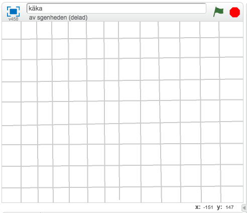
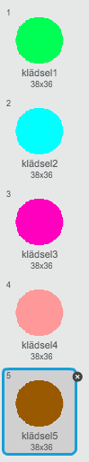
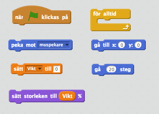
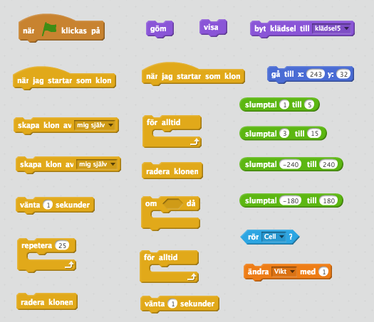
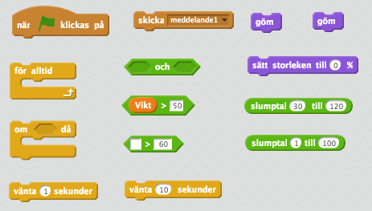
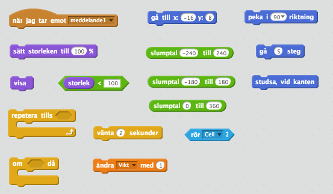

Spelet Agar.io är skapat av Matheus Valadares från Brasilien och har blivit en stor succé världen över. Vår version och instruktionen till den är skapad av Samuel Genheden, volontär i Göteborgs kodstuga! I det här spelet är du en cell som äter små kulor. Detta är en bra övning för dig som tycker om matte. Det blir mycket variabler och operatorer. Ett exempel på hur spelet kan se ut ser du här: https://scratch.mit.edu/projects/102124910/
Börja med att skapa en bakgrund och lägg till sprajten som du skall styra och ytterligare en mindre sprajt som skall bli mat.
Skapa ett nytt projekt och ta bort katten.
Rita en ny bakgrund som ser ut som ett rutnät. Det gör du lättast med linjeverktyget.
Så här kan det se ut: 
Rita en ny sprajt. Den skall var en ganska stor och fylla upp ungefär hälften av spelplanen. Den skall vara rund och fylld cirkel. Om du vill göra det lättare ritare du en större och om du vill göra det svårare ritare du en mindre cirkel.
Kalla denna sprajt "Cell". Klicka på bredvid sprajten och skriv in "Cell" istället för "Sprajt1".
Nu behöver du mat och det gör du genom att rita en ny sprajt. Men rita bara en! De andra kommer du skapa med kod. Rita en liten cirkel som du fyller med valfri färg.
Kalla denna sprajt "Mat".
Skapa en ny klädsel för sprajten genom att kopiera den första. Fyll den nya klädseln med en annan färg. Fortsätt så tills du har skapat 5 klädslar. Det skall se ut ungefär så här

Så här kan de olika klädslarna se ut.
Du skall styra sprajten Cell med musen och när du äter de små kulorna skall storleken på sprajten öka. Därför behöver vi en variabel "Vikt" som håller reda på storleken eller vikten.
Skapa en variabel som heter "Vikt", den ska vara synlig på scenen. Du hittar variabler under kategorin Data.
Skapa ett skript till Cell som säger:
Starta när START klickas på
Gå till mitten av spelplanen, x:0 y:0
Sätt "Vikt" till 20
För alltid:
Peka mot muspekare
Gå 20 steg
Sätt storleken till "Vikt"%

Testa ditt skript. Följer Cell med när du drar musen över spelplanen?
Nästa steg är att se till att du har något att äta. Vi har redan skapat en sprajt för maten och för att få flera kulor samtidigt kommer vi använda oss av KLONER. Det är som kopior av sprajten som skapas av ditt skript och bara finns så länge skriptet går.
Börja med ett skript för sprajten Mat som säger:
Starta när START klickas på
Göm sprajten.
Skapa 25 kloner genom att Repetera 25 gånger
För alltid:
vänta 0.5 sekunder
skapa klon av mig själv
Det här skriptet ser till att det finns 25 kloner av Mat i början av spelet. Därefter kommer det dyka upp en ny klon varje halv sekund. Om du tycker det är för mycket eller för lite, kan du öka/minska antalet eller se till att det dyker upp kloner oftare/mer sällan.
Skapa sedan ett nytt skript för Mat som säger:
När jag startar som klon
Visa
Byt klädsel till mellan 1 och 5
Gå till en slumpmässig plats på spelplanen
För alltid:
Det här skriptet körs varje gång en ny klon dyker upp. Klonen kommer dyka upp på en slumpmässig plats på spelplanen och kommer ha en slumpmässigt vald klädsel. Om Cell rör vid en klon försvinner den klonen.
Till sist skapa ett tredje skript som säger:
När jag startar som klon
Vänta mellan 3 och 15 sekunder
Radera klonen
Det här skriptet ser till att ta bort klonen av Mat om den inte äts upp inom en viss tid.

Testa ditt program! Du skall nu ha en enkel version av spelet där du kan styra din cell och äta upp små kulor.
Du skall nu se till att utökad spelet så att det svårare att spela ju mer poäng du får. Först skall du se till att Cell rör sig långsammare ju tyngre/större den är. För det andra skall du se till att den förlorar vikt ju tyngre/större den blir.
Just nu går Cell 20 steg varje gång du rör musen: . Ändra det så att den får ett värde som beror på vad variabeln "Vikt" har för värde:
Om du ändrar den till så kommer Cell röra sig mer ju större den är. Till exempel så kommer den röra sig 20 steg i början och sedan 30 steg när du har ätit 10 kulor. Detta är raka motsatsen mot vad vi vill.
Om du i stället ändrar till så kommer den röra sig mindre ju större den är. Till exempel så kommer den röra sig 80 steg i början (100 - 20 = 80) och 70 steg när du ätit 10 kulor. Detta är ganska bra men den rör sig väldigt fort.
Multiplicera därför denna vikt med 0.1: . Nu kommer den röra sig 8 steg i början ((100 - 20)*0.1 = 8) och 7 steg när du ätit 10 kulor. Det är en lagom hastighet, men prova gärna att multiplicera med 0.2 eller 0.05 istället!
Skapa ett nytt skript för Cell som säger:
Starta när START klickas på
För alltid:
Vänta (100 - "Vikt)*0.1 sekunder. Detta kommer gör att vi väntar 8 sekunder i början och 7 sekunder när du har ätit 10 kulor.
Ändra "Vikt" med -1*("Vikt"0.1) och avrunda. -1 gör att vi minskar storleken/vikten och den kommer minska med 2 i början och 3 när du har ätit 10 kulor. Vi avrundar så att vi alltid minskar med ett heltal (t. ex. 2 istället för 2.2).

Testa din kod! Du kan självklart göra det enklare eller svårare genom att ändra på skripten du gjorde ovan.
Tips: Tycker du att Cell rör sig för fort? Ändra koden i punkt 1. Tycker du att Cell förlorar vikt för fort? Ändra på hur många sekunder du väntar innan du förlorar vikten. Du kan också koda så att du inte förlorar vikt förrän du har kommit upp i en viss storlek.
Det är nu dags att vi skapar en motståndare. I stället för att den styrs av en annan spelare skall du koda datorn att vara din motståndare. Detta kallas artificiell intelligens och är ett stort forskningsområde som många programmerare jobbar med. Här skall du koda en ganska dum motståndare som rör sig slumpmässigt över spelplanen.
Se koden som ett förslag på vad du kan göra. Om du är lite kreativ så kan du koda en helt annan motståndare. Det finns inget som sätter stopp - bara din fantasi!
Rita en ny sprajt. Rita en fylld cirkel i valfri färg som skall vara lite mindre än sprajten Cell.
Kalla denna sprajt Fiende.
Skapa ett skript för Fiende som säger:
Starta när START klickas på
Göm
För alltid:
OM "Vikt" är större än 50 OCH ett slumptal mellan 1 och 100 är större än 60.
Skicka meddelandet "skapa"
Vänta mellan 30 och 120 sekunder
Sätt storleken till 0 %
Göm
Vänta 10 sekunder.
Detta skript kommer göra att Fiende dyker upp först när "Vikt" är större än 50. Fiende kommer också bara dyka upp med 40% säkerhet, det för att inte göra det allt för svårt. Om du vill kan du ta bort detta villkor. När Fiende har dykt upp kommer den stanna på spelplanen mellan en halv och 2 minuter (30 till 120 sekunder).

Skapa ett nytt skript för Fiende som säger:
När jag tar emot meddelandet "skapa"
Gå till en slumpmässig plats på spelplanen
Peka i en slumpmässig riktning
Sätt storleken till 100%
Visa
Repetera tills "storlek" < 100
Gå 5 steg
Studsa, vid kanten
Ändra "Vikt" med -5 och vänta 2 sekunder OM Rör Cell
Det här skriptet kontrollerar hur Fiende skall bete sig. Nu dyker den upp på ett slumpmässigt ställe på spelplanen och går i en slumpmässig riktning. Detta fortgår tills storlek är mindre än 100, vilket är ett sätt att stoppa skriptet när den försvinner (blir gömd) av skriptet i punkt 3. Det är därför vi använder oss av en "repetera tills"-block istället för ett "för alltid"-block.

Ändra skriptet för Mat:
Grattis, nu har du gjort klart uppgiften.
Glöm inte att spara ditt projekt! Döp det gärna till uppgiftens namn så att du enkelt kan hitta den igen.
Testa ditt projekt
Visa gärna någon det som du har gjort och låt dem testa. Tryck på DELA för att andra ska kunna hitta spelet på Scratch. Gå ut till projektsidan och låt någon annan testa spelet!
Har du tid över? Här kommer ett par utmaningar för dig som vill fortsätta. För tillfället kan du fortsätta spela spelet för alltid, men dessa extrauppgifter går ut på att avsluta spelet antingen när du har kommit upp i ett visst antal poäng eller när du har blivit biten av fienden.
Du kan lägga in så att spelet slutar när du har kommit upp i 100. Du måste:
Stoppa all skript.
Visa ett meddelande på skärmen.
I stället för att du förlorar 5 i vikt kan du koda så att du dör om Cell träffar Fiende mer än till exempel 5 gånger. Du måste:
Skapa en ny variabel som håller reda på hur många gånger Cell och Fiende har rört varandra.
Stoppa all skript om den variabel är större än 5.
Visa ett meddelande på skärmen.
Vad är en variabel?
Vad är en klon?
Varför kan det vara bra att skapa kloner i stället för att bara kopiera en sprajt flera gånger?
Vad är slumptal och vad kan du använda dem till?
Vad innebär det att du avrundar ett tal?